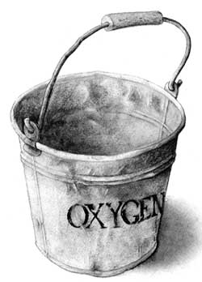

[COUNTRY DOCTOR]
Chocolate, strawberry, or lemon and lime?
Once in the lungs, the "lung miners" put the oxygen in buckets, buckets we call red blood cells.
I am not generally disposed toward rankings. It has always struck me that an approach that categorizes things in terms of Biggests and Bests is narrow-minded. If one ignores the So-Sos, and the More or Lesses, most of life goes down the drain. He who doesn't take the chaff with the wheat, doesn't get much fiber in his diet.
Nonetheless, I will be the first to admit that, in the general scheme of things, there is definitely some stuff which, if not Absolutely Tops, is at least Pretty Damn Useful, so that you would hate to be left on a desert island without it. Stuff like peanut butter and the Sunday New York Times.And oxygen.
Oxygen is the spark that drives the body's engine. The catalyst without which our ingested fuel would just lie fallow and rot, while our muscles, brain, and heart would grind slowly to a halt. There's no doubt about it. Without oxygen, it's just no go. Which is probably why Nature decided to put it in the air, where it would be readily accessible, and to make its entrance to the body via the mouth, which is usually open. She was pretty careful to insure that we would always have enough of good old O to go around.
Enough, but not too much. Air is only 21% oxygen. The rest is nitrogen, a completely useless gas. In fact, air is so low in oxygen that if oxygen were a cheese, air would be a spread; if it were meat, air couldn't even qualify as a hot dog. Air is not a high-quality product.
Which is where we, the people, come in. Of all those traits that make the sapiens in Homo, the most important has to be our ability to improve upon that which Nature hath wrought. While the lesser animals have been content to wallow around for millennia in the same old bed, we, in a paltry few thousand years, have given new meaning to the word earth. Where once there was dirt, now there is asphalt. Where once grew grass, now arises Astroturf. And where once were only lakes, now there are hot tubs.
It is no surprise that, having renovated soil and water, we would turn our attention to air. It is only surprising that it took us so long. When you consider how easy oxygen is to get and store, it seems a little odd that by now every office doesn't have an oxygen cooler, and every home, a stand of bottled oxygen.
I've seen several signs that all that should be changing soon. I was leafing through a catalog the other day, when 1 came across this advertisement: "Feeling low? Run down? Dragged out? Too tired to do those things you have to and too depressed to try the ones you want to? No More! Now you can be rejuvenated In Your Own Home! with a breath of fresh air. Life-giving, invigorating, 100% pure oxygen can be at your fingertips." It went on to describe how, for only $20, you could buy a cartridge and mask that dispensed enough oxygen puffs for 20 minutes of purification. Watching TV, I noticed that now the football players run off to the sideline not for a drink of water but for a grab of the mask. And I read in the Wall Street Journal that the Japanese sell oxygen in bars. You can even pick your flavor.
It would seem to make sense. If 21% is adequate, 100% must be dynamite. Those who have tried it swear by it. Only one problem: We can't use that much oxygen. We don't use air the way an engine uses gasoline-the higher the octane, the better it runs. We extract oxygen from the air the way miners take coal from the ground. Once in the lungs, the lung miners place the oxygen in little buckets. The buckets are called red blood cells. As each red cell is filled up, it moves along to make way for the next one. The red blood cells run along circulatory tunnels to the various organs, where they are unloaded according to demand. Since there are more than enough lung miners in the lungs to dig out oxygen-except in those cases where they have been poisoned-what limits the amount of oxygen that gets to our cells is not the richness of oxygen at the bottom but the number of buckets available to carry it to the top. So a person who wants more oxygen faster needs to get more red blood cells, not higher concentrations of oxygen.
Long-distance runners have already figured this out. This is why many go in for blood doping instead of oxygen drugging. Runners, I think, are much smarter than football players. After all, only runners can understand why it's worthwhile to spend two hours beating yourself to exhaustion with no more tangible compensation than a printed T-shirt and a cup of soup, while a football player won't run for more than a few seconds, and not even that unless you give him a couple hundred thousand dollars for encouragement.
What's the best way to get the body to make more red blood cells? Give it less oxygen. You can do this by moving to the mountains, but for most people this is too much trouble. Fortunately, at the rate we are cutting down the trees that make oxygen, and are producing carbon monoxide that depletes it, it won't be long before the air at sea level will have as much oxygen as that on Mount Everest. We will be making red blood cells like crazy.
Then we can really use our oxygen tanks.
|
 ILLUSTRATION BY CAROL INOUYE |
|
|